P5. pi0.5: a Vision-Language-Action Model with Open-World Generalization¶
0. 읽기 전 약어 및 핵심 용어¶
이 문서를 읽기 전에 아래 약어와 용어를 먼저 정리한다. 이후 본문에서는 괄호 안의 약어를 사용한다.
- Large Language Model (LLM): 대규모 텍스트 데이터로 학습되어 언어 이해, 생성, 추론, 계획에 쓰이는 foundation model이다.
- Vision-Language Model (VLM): 이미지와 텍스트를 함께 입력받아 시각-언어 이해나 생성 작업을 수행하는 모델이다.
- Vision-Language-Action (VLA): 시각 관측과 언어 명령을 함께 받아 로봇 action까지 생성하는 모델 또는 학습 패러다임이다.
- Visual Question Answering (VQA): 이미지나 비디오를 보고 자연어 질문에 답하는 vision-language task이다.
- Question Answering (QA): 질문에 대해 정답이나 설명을 생성하는 자연어 처리 task이다.
- Out-of-Distribution (OOD): 학습 데이터 분포와 다른 object, scene, task, embodiment, environment 조건을 뜻한다.
- Cross-Entropy (CE): 분류나 next-token prediction에서 target distribution과 predicted distribution의 차이를 측정하는 loss이다.
- Robotics Transformer (RT): robot observation을 입력받아 action을 예측하는 transformer 기반 robot policy 계열을 뜻한다.
- Robotics Transformer 2 (RT-2): web-scale vision-language knowledge와 robot trajectory를 함께 학습해 action token을 생성하는 VLA 모델이다.
- Open X-Embodiment (OXE): 여러 기관, 로봇, task의 demonstration을 묶은 대규모 cross-embodiment robot dataset이다.
- Frequency-space Action Sequence Tokenization (FAST): robot action chunk를 frequency-domain representation으로 압축해 discrete token으로 만드는 action tokenizer이다.
- Physical Intelligence pi-zero model (pi0): Physical Intelligence가 제안한 general robot control용 vision-language-action flow model이다.
- Physical Intelligence pi-zero-point-five model (pi0.5): pi0를 open-world household manipulation으로 확장한 VLA model이다.
- pi-zero FAST model (pi0-FAST): FAST tokenizer를 이용해 continuous robot action을 autoregressive discrete token prediction으로 다루는 pi0 변형이다.
1. Metadata¶
| Field | 내용 |
|---|---|
| ID | P5 |
| Title | pi0.5: a Vision-Language-Action Model with Open-World Generalization |
| Authors | Physical Intelligence, Kevin Black, Noah Brown, James Darpinian et al. |
| Affiliation / Team | Physical Intelligence |
| Venue / Status | CoRL / arXiv |
| Date | 2025-04-22 |
| Link | https://arxiv.org/abs/2504.16054 |
| Local source | paper_corpus/sources/P5 |
| Source figures | paper_corpus/figures_source/P5/manifest.md |
2. 핵심 요약¶
pi0.5는 pi0를 기반으로, 실험실이나 training environment와 다른 실제 가정 환경에서 mobile manipulator가 kitchen/bedroom cleaning 같은 long-horizon task를 수행하도록 만든 VLA model이다. 핵심 질문은 "VLA가 정말 open-world generalization을 할 수 있는가?"이고, 답으로 heterogeneous co-training recipe를 제안한다.
이 논문은 robot action data만 더 많이 모으는 접근을 넘어서, 다른 로봇의 데이터, high-level semantic subtask prediction, verbal instruction, web image-language data를 하나의 VLA sequence modeling framework 안에서 함께 학습한다. runtime에는 같은 모델이 먼저 high-level subtask를 예측하고, 그 subtask를 조건으로 low-level action chunk를 생성한다.
3. 왜 중요한가?¶
- pi0의 flow matching VLA를 open-world household manipulation으로 확장한다.
- 약 400시간의 target mobile manipulation data만으로, 완전히 새로운 실제 가정에서 kitchen/bedroom cleanup을 수행한다.
- pre-training example의 대부분은 target mobile manipulation이 아니라 web data, other robot data, high-level semantic data 등 heterogeneous source에서 온다.
- discrete FAST token pretraining과 continuous flow matching post-training을 결합해 training efficiency와 real-time control을 동시에 노린다.
- high-level subtask prediction을 별도 planner가 아니라 같은 VLA 안에 통합한다.
4. 전체 아이디어¶
pi0.5는 "새 집을 청소하는 로봇"이라는 매우 직관적인 demo를 통해 open-world generalization을 보여준다.
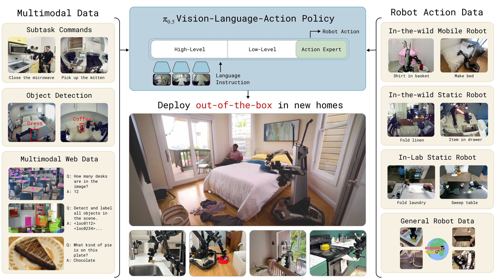
Figure 1. pi0.5는 다른 로봇, high-level subtask prediction, verbal instruction, web data에서 knowledge를 transfer하여 training data에 없던 새 집의 bedroom/kitchen을 청소한다. task duration은 10-15분까지 이어진다. Source figure: figures/pibnb-teaser-bedroom.pdf.
이 논문의 메시지는 단순하다. 새 환경에서 집안일을 하려면 action skill뿐 아니라 object semantics, scene semantics, subtask decomposition, embodiment transfer가 모두 필요하다. pi0.5는 이들을 모두 data mixture 문제로 다룬다.
5. New Kitchen Example¶
논문은 training data에 없던 kitchen에서 cabinet closing, drawer organization, spill wiping, dishes in sink 등을 수행하는 예시를 제시한다.
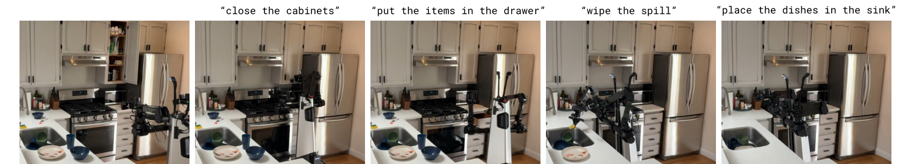
Figure 2. pi0.5 cleaning a new kitchen. robot은 general task prompt를 받고, "pick up the plate" 같은 subtask를 예측하면서 low-level action을 함께 생성한다. Source figure: figures/final_fig2.pdf.
발표에서는 이 그림을 통해 pi0.5의 inference loop를 설명하면 좋다.
- 사용자가 "put the dishes in the sink" 같은 high-level prompt를 준다.
- 모델이 현재 scene에서 다음 subtask text를 예측한다.
- 같은 모델의 action expert가 subtask를 조건으로 action chunk를 생성한다.
- 행동 후 observation이 바뀌면 다시 subtask/action을 예측한다.
6. Model Overview¶
pi0.5는 two-stage training과 two-level inference를 함께 사용한다.
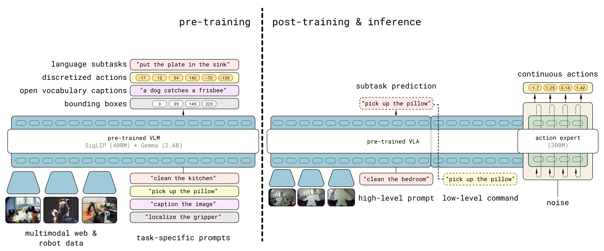
Figure 3. Model overview. pre-training에서는 diverse robot platforms, high-level semantic action prediction, web data를 discrete token 기반으로 학습한다. post-training에서는 mobile manipulation에 특화하고 flow matching action expert를 추가한다. inference에서는 먼저 high-level subtask를 예측하고, 그 subtask를 조건으로 low-level action을 생성한다. Source figure: figures/Figure_3.pdf.
| 구성 | 역할 |
|---|---|
| VLM backbone | image/language/text token sequence modeling |
| FAST action tokenizer | pre-training에서 action chunk를 discrete token으로 압축 |
| action expert | post-training에서 continuous action chunk를 flow matching으로 생성 |
| high-level subtask output | "pick up the plate" 같은 semantic action text |
| low-level action output | robot arm, gripper, base, torso lift control |
7. VLA Imitation Learning Formulation¶
논문은 일반적인 VLA imitation learning을 다음 likelihood maximization으로 정리한다.
| Notation | 의미 |
|---|---|
| \(\theta\) | VLA model parameter |
| \(\mathcal{D}\) | robot demonstration dataset |
| \(\mathbf{a}_{t:t+H}\) | timestep \(t\)부터 \(t+H\)까지의 action chunk |
| \(\mathbf{o}_t\) | 현재 observation |
| \(\ell\) | natural language task instruction |
| \(\pi_{\theta}\) | observation과 instruction을 조건으로 action chunk를 생성하는 policy |
이 식은 RT-2/OpenVLA/pi0 계열이 모두 공유하는 imitation learning 출발점이다. pi0.5의 차별점은 여기에 text output과 action output을 동시에 두고, high-level inference와 low-level control을 같은 모델 안에서 분해한다는 점이다.
8. High-Level / Low-Level Decomposition¶
pi0.5는 action chunk와 textual output을 함께 모델링한다.
| Notation | 의미 |
|---|---|
| \(\hat{\ell}\) | model의 textual output; high-level subtask 또는 web QA/caption answer |
| \(\ell\) | user가 준 overall task prompt |
| \(\pi_{\theta}(\hat{\ell} \mid \mathbf{o}_t,\ell)\) | 현재 scene과 task prompt에서 다음 semantic subtask를 예측하는 high-level inference |
| \(\pi_{\theta}(\mathbf{a}_{t:t+H} \mid \mathbf{o}_t,\hat{\ell})\) | subtask를 조건으로 low-level action chunk를 생성하는 inference |
| \(\mathbf{o}_t\) | image와 proprioception을 포함한 observation |
이 decomposition은 SayCan류의 "planner + policy" 구조와 닮았지만, pi0.5에서는 두 분포가 같은 VLA model에 의해 표현된다. 따라서 external LLM planner에 의존하는 구조보다 robot-domain data로 high-level inference를 직접 적응시킬 수 있다.
9. Token Types와 Transformer Representation¶
모델은 multimodal token sequence를 입력으로 받아 output token sequence를 생성한다.
| Notation | 의미 |
|---|---|
| \(\mathbf{x}_{1:N}\) | 입력 token sequence |
| \(\mathbf{y}_{1:N}\) | 출력 token sequence |
| \(f\) | transformer model |
| \(A(\mathbf{x}_{1:N})\) | token 간 attention 가능 여부를 나타내는 attention mask |
| \(\rho(\mathbf{x}_{1:N})\) | token type indicator |
| \(\mathbf{x}^{w}_i \in \mathbb{N}\) | text token |
| \(\mathbf{x}^{I}_i \in \mathbb{R}^{p\times p\times 3}\) | image patch token |
| \(\mathbf{x}^{a}_i \in \mathbb{R}^{d}\) | flow matching 중간 단계의 continuous action token |
token type에 따라 text embedding, vision encoder, action projection, action expert weight가 달라진다. 특히 action expert embedding은 prefix와 서로 attend할 수 있지만, FAST action token과는 information leakage를 막기 위해 직접 attend하지 않도록 mask를 둔다.
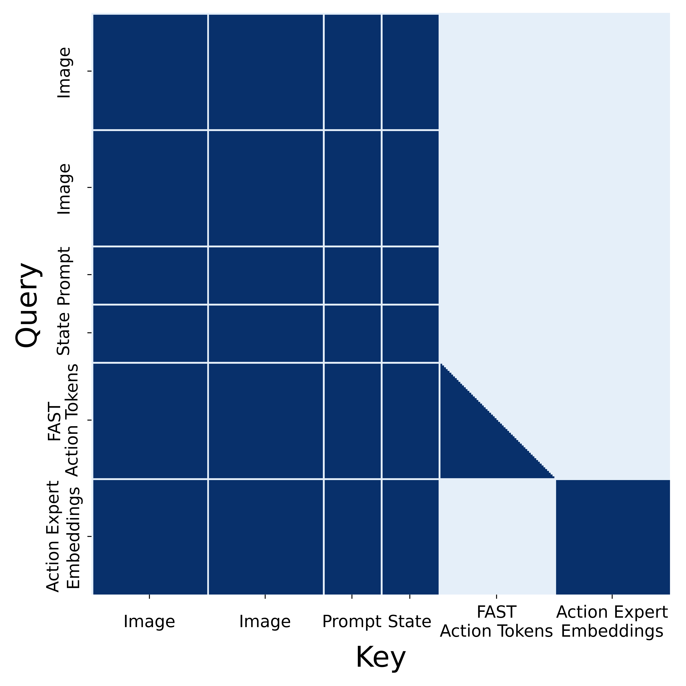
Figure 4. Attention masking pattern. VLM과 action expert는 self-attention을 통해 상호작용하지만, action expert가 FAST action token을 보지 않도록 하여 두 action representation 사이의 leakage를 막는다. Source figure: figures/attention_mask.png.
10. Discrete FAST와 Continuous Flow를 결합한 Objective¶
pi0.5는 pre-training에서는 action을 FAST discrete token으로 다루고, post-training에서는 flow matching action expert를 추가한다. 두 표현을 함께 학습하는 combined objective는 다음과 같다.
| Notation | 의미 |
|---|---|
| \(\mathcal{D}\) | training data mixture |
| \(\tau\) | flow matching timestep |
| \(\boldsymbol{\omega}\) | Gaussian noise sample |
| \(H(\cdot,\cdot)\) | text token/FAST token에 대한 cross entropy loss |
| \(\mathbf{x}_{1:M}\) | target text token sequence; FAST encoded action token도 포함 가능 |
| \(f^{\ell}_{\theta}\) | text/FAST token logits를 출력하는 VLM branch |
| \(\alpha\) | cross entropy loss와 flow loss 사이의 trade-off parameter |
| \(\mathbf{a}_{t:t+H}\) | clean action chunk |
| \(\mathbf{a}^{\tau,\boldsymbol{\omega}}_{t:t+H}\) | noisy action chunk |
| \(f^{a}_{\theta}\) | action expert가 출력하는 flow vector field |
논문은 pre-training 단계에서는 \(\alpha=0\)으로 두어 standard VLM transformer처럼 discrete token prediction을 학습하고, post-training 단계에서는 \(\alpha=10.0\)으로 flow matching action expert를 함께 학습한다. 이 설계는 FAST token의 training efficiency와 flow matching의 real-time continuous control 장점을 결합한다.
11. Noisy Action Chunk¶
flow matching에 쓰이는 noisy action chunk는 다음과 같이 정의된다.
| Notation | 의미 |
|---|---|
| \(\mathbf{a}_{t:t+H}^{\tau,\boldsymbol{\omega}}\) | flow timestep \(\tau\)에서의 noisy action chunk |
| \(\mathbf{a}_{t:t+H}\) | demonstration의 clean action chunk |
| \(\boldsymbol{\omega}\) | standard Gaussian noise |
| \(\mathcal{N}(0,\mathbf{I})\) | 평균 0, identity covariance의 Gaussian distribution |
| \(\tau\) | clean action과 noise를 섞는 interpolation coefficient |
논문은 이 noisy action을 action expert에 넣고 vector field를 예측하게 한다. pi0와 마찬가지로 lower timestep을 강조하는 timestep sampling을 사용한다.
| Notation | 의미 |
|---|---|
| \(p(\tau)\) | timestep sampling distribution |
| \(s\) | timestep cutoff |
| \(\alpha,\beta\) | beta distribution parameter |
12. Training Data Mixture¶
pi0.5의 가장 중요한 contribution은 data mixture 설계다.
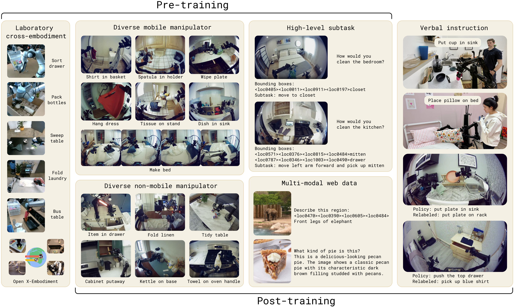
Figure 5. Pre-training and post-training tasks. MM, ME, CE, HL, WD, VI가 서로 다른 형태의 supervision을 제공한다. post-training에서는 mobile manipulation과 diverse environment에 초점을 맞추기 위해 CE를 제외하고 VI를 추가한다. Source figure: figures/pretraining-finetuning-tasks.pdf.
| 약어 | 의미 | 역할 |
|---|---|---|
MM |
diverse mobile manipulator data | target task와 가장 직접적으로 관련된 약 400시간의 household mobile manipulation data |
ME |
multi-environment non-mobile robot data | 더 많은 실제 home environment에서 수집된 static/simpler robot data |
CE |
cross-embodiment laboratory data | 다양한 robot/task의 lab data와 OXE 포함 |
HL |
high-level subtask prediction | "clean bedroom"을 "pick up pillow" 같은 subtask로 분해하도록 학습 |
WD |
web data | captioning, VQA, object localization 등 semantic knowledge 강화 |
VI |
verbal instruction demonstrations | human supervisor가 step-by-step language로 robot을 지시한 high-level demonstration |
논문은 pre-training 첫 단계에서 training example의 97.6%가 target mobile manipulator household task가 아니라고 강조한다. 즉, generalization은 target data만의 결과가 아니라 heterogeneous transfer의 결과다.
13. Robot System¶
pi0.5는 두 종류의 mobile manipulator platform에서 평가된다.
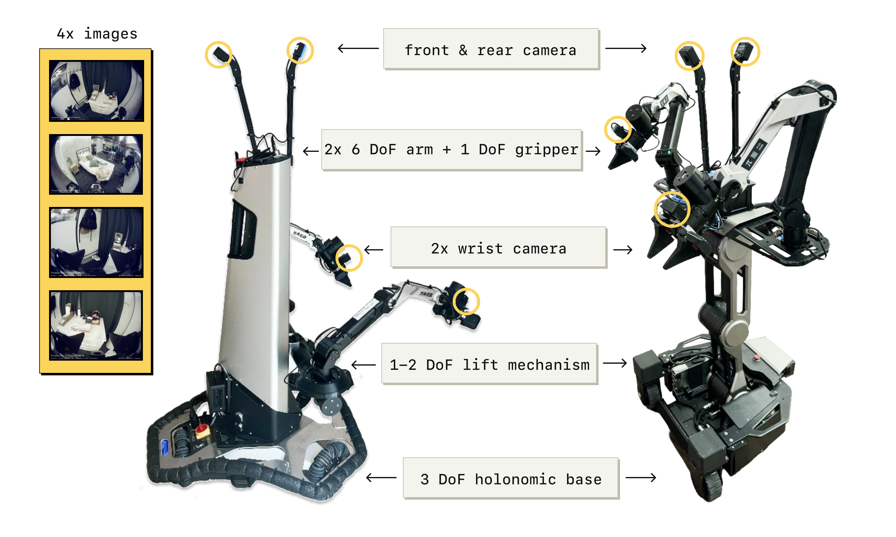
Figure 6. Robot system overview. robot은 4개 camera, 두 개의 6-DoF arm, parallel jaw gripper, holonomic base, torso lift를 가진다. pi0.5는 arm, gripper, base velocity, lift position을 직접 제어한다. Source figure: figures/robot_system_overview.pdf.
중요한 점은 시스템이 별도의 trajectory planning이나 collision detection 없이 단순 PD controller로 target pose/velocity를 tracking한다는 것이다. 즉, manipulation과 navigation control 대부분이 learned policy에 들어간다.
14. Real Home Evaluation¶
pi0.5는 training에 없던 real home 세 곳에서 kitchen/bedroom task를 수행한다.
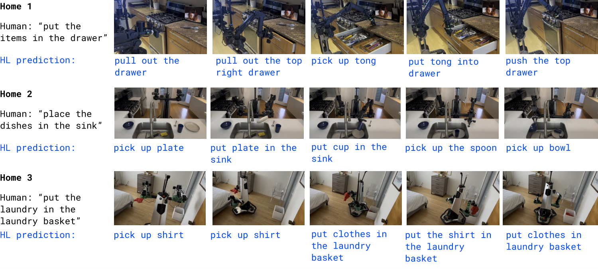
Figure 7. Real home rollouts. Home 1에서는 drawer에 물건 넣기, Home 2에서는 dishes in sink, Home 3에서는 clothes in laundry basket을 수행하며, 각 frame 아래에는 model이 예측한 high-level subtask가 표시된다. Source figure: figures/final_real_home_eval_filmstrip.pdf.
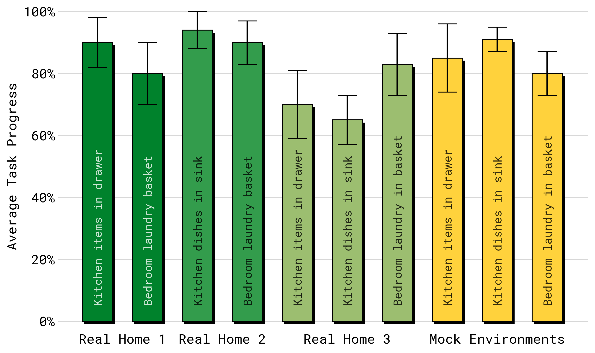
Figure 8. Real home quantitative evaluation. 세 real home에서 items in drawer, laundry basket, dishes in sink task의 progress를 평균 10 trial 기준으로 평가한다. Source figure: figures/real_home_quantitative_eval_plot.png.
논문은 mock setup에서의 성능이 real home 성능과 대체로 representative하다고 보고한다. 여기서 task는 2-5분 길이의 multi-stage task로 설명되며, teaser에서는 더 복잡한 10-15분 behavior도 강조한다.
15. Environment Scaling¶
논문은 mobile manipulation data에서 training location 수를 3, 12, 22, 53, 82, 104개로 바꾸며 generalization scaling을 평가한다.
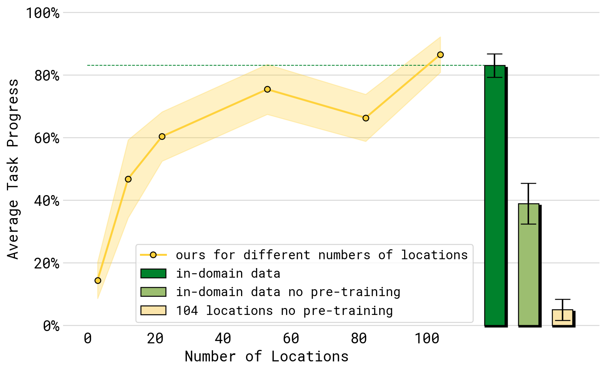
Figure 9. Performance with different numbers of locations. dishes in sink, items in drawer, laundry basket, make bed의 평균 성능은 training environment 수가 늘수록 개선된다. Source figure: figures/env_scaling.png.
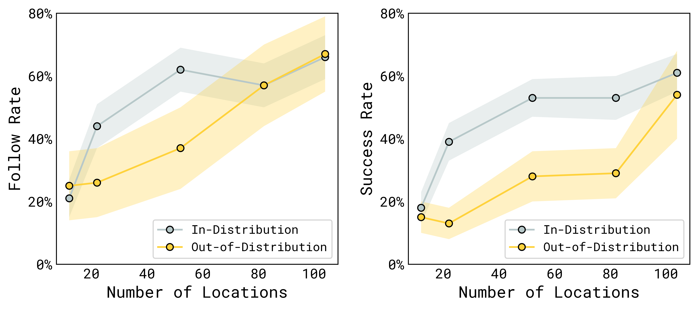
Figure 10. Language following with different numbers of locations. seen category와 unseen category 모두에서 training location 수가 증가할수록 language following과 placement success가 개선된다. Source figure: figures/env_scaling_results0.png.
운영/현장 적용 관점에서는 이 실험이 특히 흥미롭다. robot data collection을 "얼마나 많은 episode를 모을 것인가"가 아니라 "얼마나 많은 distinct environment를 커버할 것인가"라는 coverage/allocation 문제로 바꿔준다.
16. Co-Training Recipe Ablation¶
co-training ablation은 어떤 data source가 어떤 일반화에 기여하는지 보여준다.
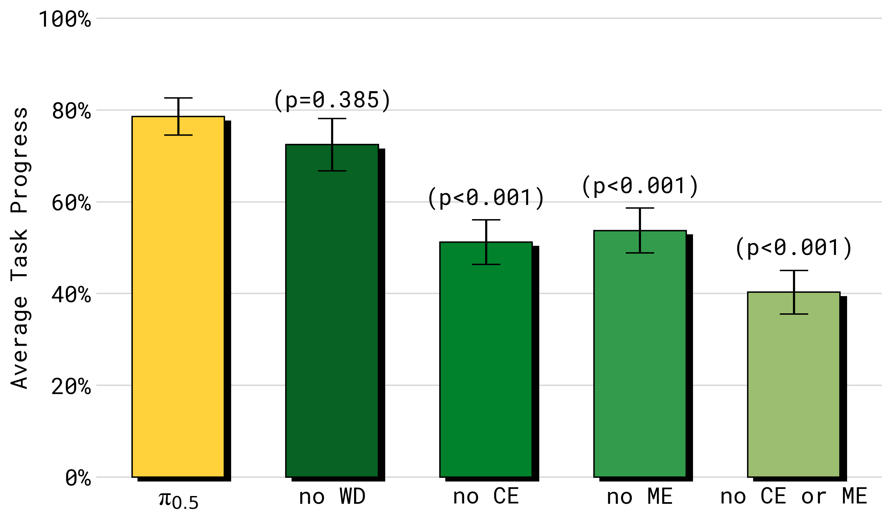
Figure 11. Training recipe ablations in mock homes. ME 또는 CE를 제거하면 end-to-end task performance가 크게 떨어지고, 둘 다 제거하면 더 악화된다. WD 제거는 이 실험에서는 큰 차이가 아니지만 language/object generalization에서 중요해진다. Source figure: figures/performance_vs_ll_data.png.
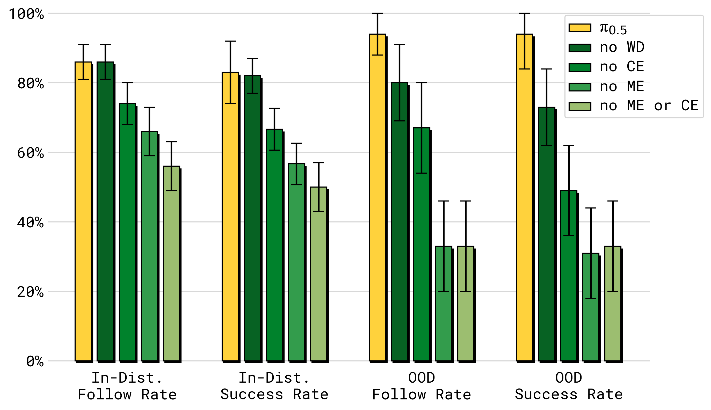
Figure 12. Training recipe ablations for language following. WD는 특히 OOD object language following에 중요하고, ME/CE 역시 ID/OOD 모두에서 큰 영향을 준다. Source figure: figures/data_vs_generalization.png.
핵심 해석은 다음과 같다.
| 제거한 요소 | 주된 영향 |
|---|---|
no ME |
다양한 실제 환경에서 온 non-mobile robot transfer가 사라져 성능 하락 |
no CE |
다양한 task/embodiment에서 온 manipulation prior가 줄어 성능 하락 |
no ME or CE |
target mobile platform data만으로는 generalization이 크게 부족 |
no WD |
end-to-end mock task에서는 영향이 작을 수 있지만 OOD object/language/high-level inference에서 중요 |
17. Comparison with pi0 and pi0-FAST+Flow¶
pi0.5는 pi0 및 pi0-FAST+Flow와 비교된다.
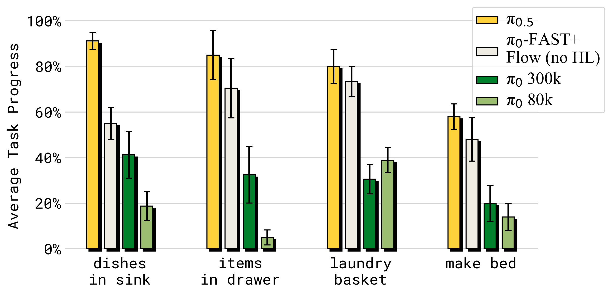
Figure 13. Comparison with other models. full pi0.5는 pi0 및 pi0-FAST+Flow보다 mock home test environment에서 높은 성능을 보인다. Source figure: figures/performance_vs_ll_model.png.
pi0-FAST+Flow는 hybrid action representation을 사용하지만 action data만 사용하고 HL/WD가 없다. 따라서 이 비교는 architecture improvement만으로는 부족하고, high-level semantic data와 web data를 포함한 co-training recipe가 중요하다는 점을 보여준다.
18. High-Level Inference Ablation¶
논문은 high-level inference가 정말 필요한지 여러 baseline으로 평가한다.
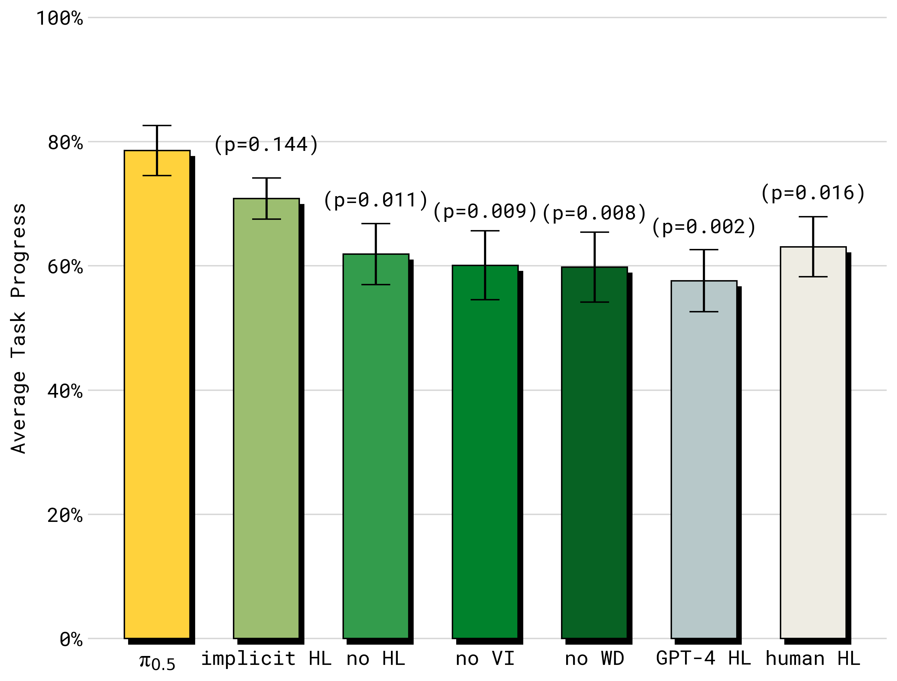
Figure 14. Evaluation of high-level inference. full pi0.5가 가장 좋고, implicit HL도 좋은 성능을 보인다. no VI, no WD, no HL은 성능이 떨어지며, zero-shot GPT-4 high-level policy는 가장 낮은 성능을 보인다. Source figure: figures/performance_vs_hl_data.png.
흥미로운 점은 full model이 human high-level oracle보다도 높게 나온다는 것이다. 이는 high-level label 자체보다, low-level policy와 high-level prediction이 같은 data distribution 안에서 co-adapt된 것이 중요할 수 있음을 시사한다. 또한 implicit HL이 두 번째로 좋다는 결과는 subtask prediction data를 학습 mixture에 넣는 것만으로도 policy 내부에 useful task structure가 들어갈 수 있음을 보여준다.
19. World Model 관점에서의 해석¶
pi0.5도 explicit dynamics world model을 학습하지는 않는다. 그러나 pi0보다 더 world model 문제에 가까워진다.
| World Model 질문 | pi0.5에서의 대응 |
|---|---|
| 다음에 무엇을 해야 하는가? | high-level subtask text prediction |
| scene/object semantics를 어떻게 가져오는가? | web captioning, VQA, localization data co-training |
| action이 scene을 어떻게 바꾸는가? | low-level action data와 subtask-conditioned policy로 implicit하게 학습 |
| 새 집/새 물체에 어떻게 일반화하는가? | environment diversity, cross-embodiment transfer, WD/HL/VI mixture |
| memory/partial observability는 어떻게 처리하는가? | 아직 제한적이며 논문 limitation에서 future work로 언급 |
따라서 pi0.5는 explicit rollout model이라기보다, heterogeneous supervision으로 scene semantics, task decomposition, physical action prior를 하나의 policy 안에 압축한 implicit open-world physical policy model로 볼 수 있다.
20. 기존 논문들과의 연결¶
| 연결 논문 | 연결 포인트 |
|---|---|
pi0 (P4) |
flow matching action expert와 VLM backbone을 계승 |
| FAST / pi0-FAST | discrete action tokenizer를 pre-training efficiency에 활용 |
SayCan (G2) |
high-level semantic subtask와 low-level policy를 연결 |
Open X-Embodiment (D1) |
cross-embodiment data transfer의 중요성 |
OpenVLA (D5) |
VLA sequence modeling framework를 robot control에 적용 |
Diffusion Policy (P1) |
continuous action chunk generation과 real-time control |
| household/mobile manipulation datasets | training environment diversity가 generalization에 미치는 영향 |
21. 한계와 주의점¶
- broad generalization은 보이지만 여전히 실패한다.
- unfamiliar drawer/cabinet handle처럼 physical affordance가 다른 object에서 어려움이 있다.
- partial observability 문제가 있다. 예를 들어 robot arm이 spill을 가려 wipe해야 할 대상을 못 볼 수 있다.
- high-level subtask inference가 distract되어 drawer를 반복해서 열고 닫는 등 불안정한 행동이 생길 수 있다.
- prompt complexity는 training data annotation의 복잡도에 제한된다.
- context와 memory가 modest하여 여러 방을 오가거나 object 위치를 기억해야 하는 task에는 추가 연구가 필요하다.
22. 발표 구성 제안¶
- pi0가 dexterous general robot control을 보여줬다면, pi0.5는 "새 집에서 일반화"가 질문이라고 시작한다.
- Figure 1과 Figure 2로 새 집 cleaning demo를 보여주며 motivation을 만든다.
- Figure 3으로 two-stage training과 high-level/low-level inference를 설명한다.
- decomposition 수식으로 같은 모델이 subtask와 action을 모두 모델링한다는 점을 설명한다.
- FAST+flow combined objective를 통해 training efficiency와 real-time continuous control의 trade-off를 설명한다.
- data mixture
MM/ME/CE/HL/WD/VI를 설명하고, target data만으로는 부족하다는 점을 강조한다. - real home evaluation, environment scaling, co-training ablation, high-level ablation 순서로 결과를 정리한다.
- 마지막에 "open-world generalization은 model architecture만이 아니라 data recipe 문제"라는 메시지로 마무리한다.
23. 토론 질문¶
- open-world robot generalization에서 environment diversity와 object diversity 중 무엇이 더 병목일까?
- high-level subtask prediction을 같은 VLA가 하는 것이 별도 LLM/VLM planner보다 왜 나을 수 있을까?
- web data가 low-level physical skill에는 직접 관여하지 않는데, 어떤 경로로 manipulation performance를 개선할까?
- target mobile manipulation data가 400시간뿐일 때, 어떤 data source를 추가로 수집하는 것이 가장 효율적일까?
- 운영/현장 적용 관점에서 robot data collection을 environment/task/object/embodiment coverage optimization 문제로 모델링할 수 있을까?
24. 한 문장 정리¶
pi0.5는 pi0의 VLA/action expert 구조를 heterogeneous co-training과 high-level subtask inference로 확장하여, 실제 새 가정 환경에서 long-horizon household manipulation을 수행하는 open-world generalization 중심의 robot foundation model이다.